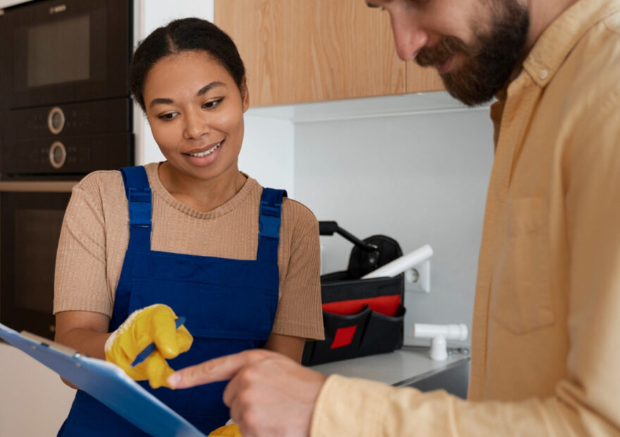

MINDFUL CLEANING SOLUTIONS
A Fresh, Clean Space With Thoughtful Products
Our bio cleaning service pairs effective cleaning methods with carefully selected, biodegradable products. Choose a lower-impact clean for homes, workplaces, and shared spaces, with a plan tailored to your needs.
Biodegradable product options
Household and workplace visits
Cleaning plan tailored to your space

Considered Cleaning
SPECIALIST BIO CLEANING
Specialist Cleaning & Restoration Support
Sensitive situations are handled with care, respect, and an assessment tailored to the property and its needs.
 Specialist Cleaning
Specialist CleaningBiohazard & Trauma Cleaning
Discreet, specialist cleaning after traumatic or hazardous incidents, with a careful assessment and responsible handling of affected areas.
- Sensitive, respectful response
- Risk-aware site assessment
- Appropriate waste handling arrangements
 Restoration
RestorationEnvironmental & Structural Restoration
Cleaning support for properties affected by environmental damage, coordinated with an assessment of the building and restoration requirements.
- Property condition assessment
- Cleaning of affected areas
- Coordination with restoration specialists

Public HealthInfection Control & Public Health Cleaning
Targeted cleaning and hygiene support for shared or affected spaces, planned to suit the setting and applicable guidance.
- Site-specific cleaning plan
- Focus on relevant touchpoints and areas
- Suitable products selected for the task
Social & Mental-Health-Related Cleaning
Non-judgmental cleaning support for sensitive living situations, arranged with the resident, family, or support team as appropriate.